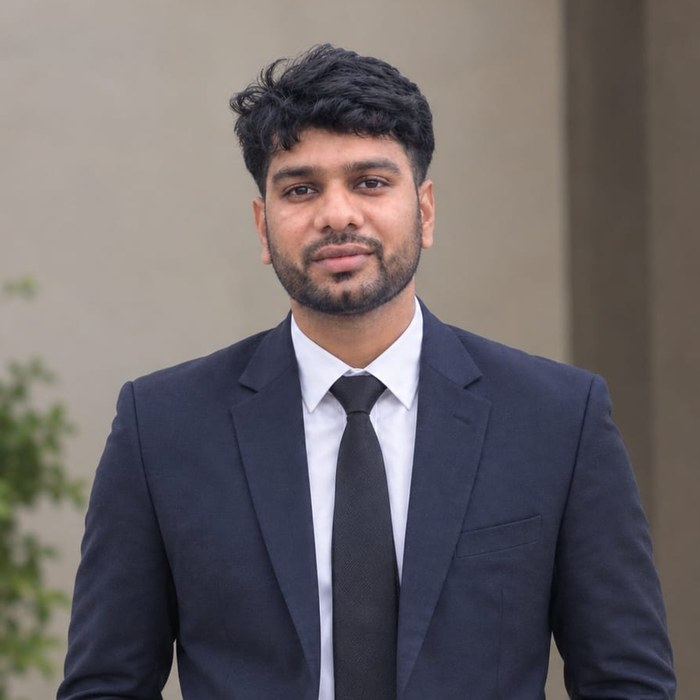
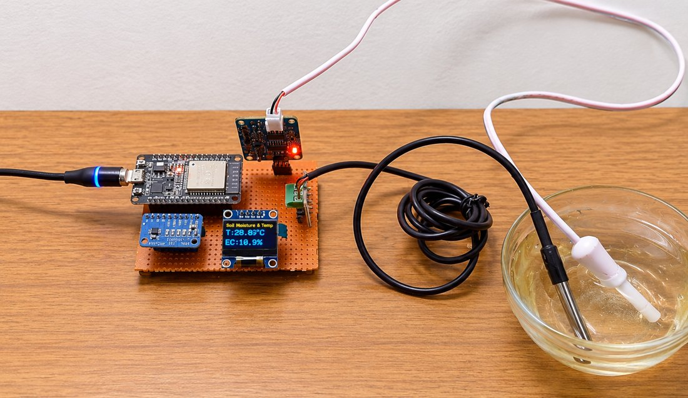
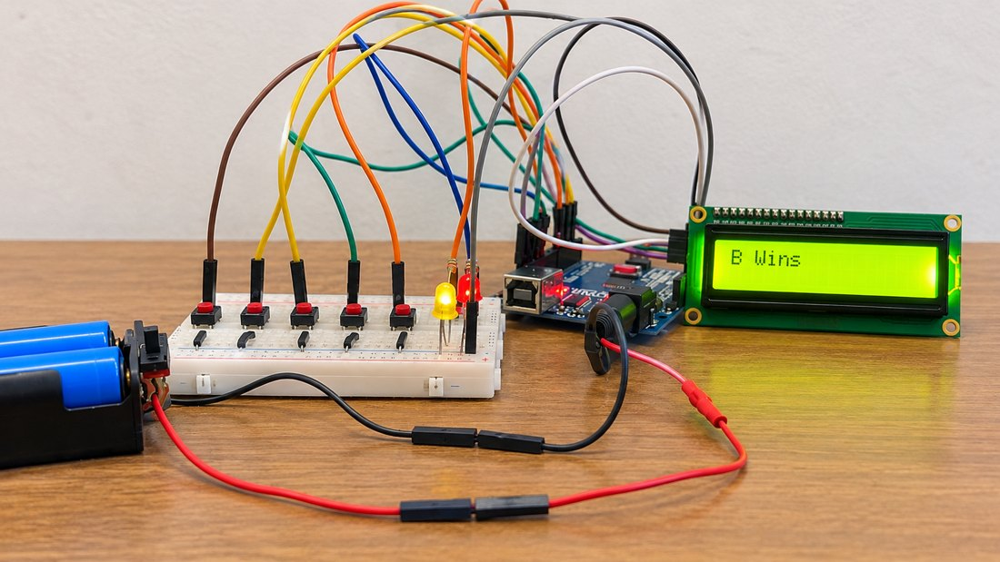
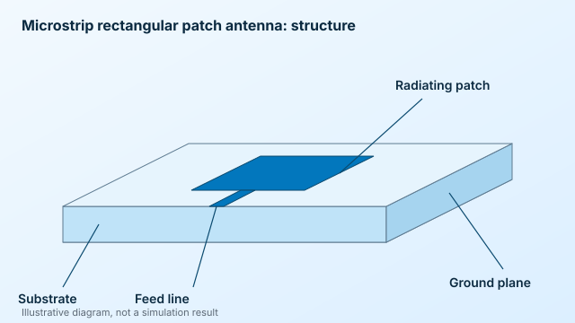
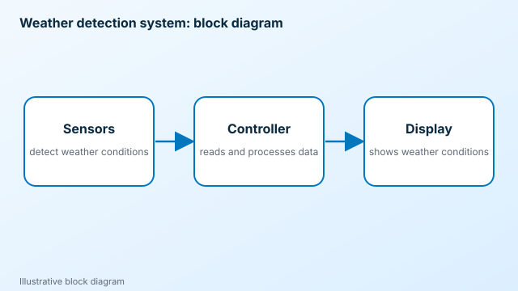

I'm Jahid Hasan Rajon, an Electrical and Electronic Engineering undergraduate at AIUB with academic project and laboratory experience in reviewing electrical diagrams and project specifications, planning tasks, resources and equipment, and preparing technical documentation.
I study Electrical and Electronic Engineering at American International University-Bangladesh. My coursework covers power systems, power stations and substations, protection, control systems, embedded systems and renewable energy.
In my academic projects I read electrical diagrams, check them against project specifications, and break the work into tasks, equipment lists and resource needs, keeping teammates aligned so work is completed on time. In the lab I record results carefully and write clear technical reports, following electrical safety practice.
I am seeking an Entry-level Engineer position where I can apply my knowledge of electrical installation, maintenance and safety to high-voltage substation installation, testing and commissioning, coordinate effectively with project teams, and keep learning through hands-on site experience.
Selected academic and independent projects, with objective, tools and my contribution.

An ESP32-based monitor that shows soil temperature and moisture/EC readings on an OLED display.
Measure temperature and moisture/conductivity with probes and display the readings live.

An electronic voting machine that records and counts votes accurately.
Build an electronic voting machine that records and counts votes accurately.

Design and simulation of a microstrip rectangular patch antenna.
Design and simulate a microstrip rectangular patch antenna.

A sensor-based system that detects and displays weather conditions.
Develop a system that detects and displays weather conditions using sensors and electronic circuitry.
Worked with teammates on academic projects and coordinated tasks to meet deadlines.
Prepared technical reports and project documents to communicate engineering work clearly.
Planned schedules, equipment and resource needs for project work.
Explored engineering solutions through technical research, simulation and project development.
Committed to building practical skills in electrical installation, maintenance and safety.
Open to Assistant Engineer opportunities. Reach out anytime.